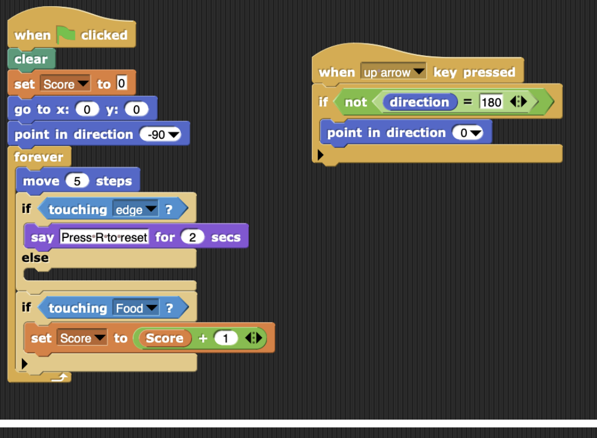
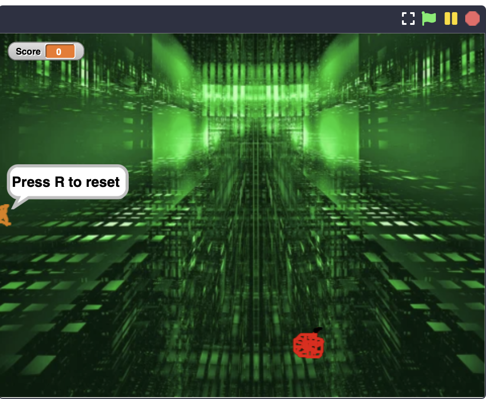

Drawing Tool
Do you want to draw shapes online? This is a app / program that I coded on scratch that draws any shape you want. First, when you run the program, it will ask the user how many sides they want on their shapes, and after the user inputs their answer, the program will draw the shape.
Custom Functions
In this scratch project, I coded a program that allows you to do various math operations instantly. For example, one of the programs is that If you want to find the maximum of two numbers, you can just put it in the program and it will give you the biggest number. Another one is where if you have a list of numbers and you put it in the specific programs, it will give you either the maximum number of the list, the minimum number, the average number, or the sum of the numbers.

Custom Functions
In this scratch project, we coded a character to make a short Mad Libs story. In this project, the program will first ask the user what to input as their name, skills, etc. And with the information the program is going to create a short story.
Fall Genius Hour
This is my fall genius hour. I did Python CMU and made images with the code I learned. I was able to make my own pictures and add any designs that I wanted.
AP Create Project
This is my AP Create Project. In this project, our task was to create an app with three things, a data list, a procedure, and a parameter and what I did with my partner is create a Snake Game.

